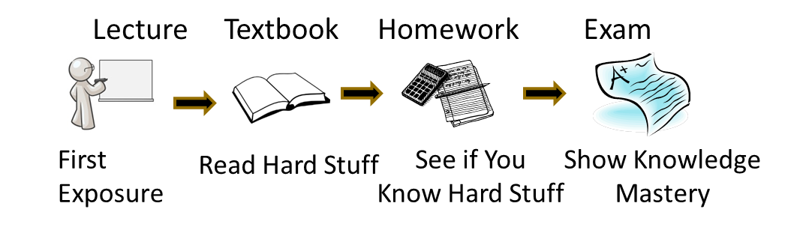
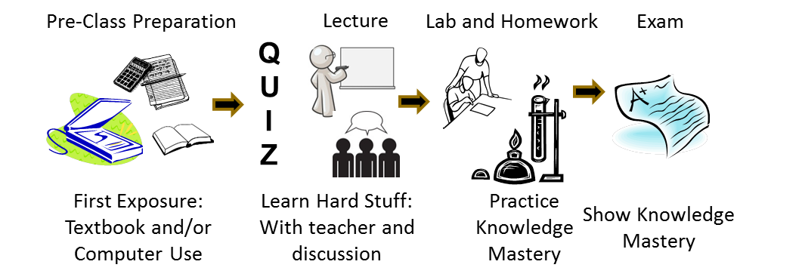
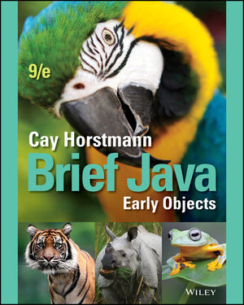

CS 170 Syllabus, Summer 2019

Hello, my name is Stephen Gilbert. Welcome to the Orange Coast College CS 170, Java Programming I, information page. In Summer 2019, we'll be offering two sections of CS 170. Both sections will be 6-week hybrid classes. That means that your section will meet (on campus) 2 times a week, from 8:30 am to 12:00 noon, on either Monday/Wednesday, or on Tuesday/Thursday. Because of the compressed summer schedule, each week is equal to three weeks during the regular, 16-week semester.
Who, Where, and When
CS 170 meets in room 126 in the Math, Business and Computing Center, which is right in the corner of the Adams parking lot. (Map #74)
- CRN# 11091 meets Monday and Wednesday from 8:30 AM to 12:05 AM
- CRN# 12131 meets Tuesday and Thursday from 8:30 AM to 12:05 AM
Click the schedule link (also appearing at the top of this page) to see what will be covered on each meeting. Note that because of the compressed summer schedule, every week will have at least one important exams.
Instructor Contact Information
- Office : MBCC 108
- Office hours : Before and after class and by appointment
- Email : sgilbert@occ.cccd.edu
- Office phone : (714) 432-0202 ext 21173
What is CS 170 All about?
Here's the official course description from the OCC catalog:
A first Computer Science course taught using the Java programming language. Students will build console and graphical applications. Emphasis will be placed on programming fundamentals such as variables, selection and loops as well as object-oriented programming concepts including classes, inheritance and polymorphism.
May be taken for a grade or on a credit/no-credit basis. Three and one-half hours lecture, one and one-half hours non-lecture.
At OCC, CS 170 is one of the first courses in the Computer Science major for students who intend to transfer to a 4-year institution. This class will introduce you to the principles of Computer Science, using the Java programming language; it isn't a "Web programming class" like HTML or JavaScript.
What's CS 170 REALLY About?
A course in computer programming is a course in thinking and problem solving. It is also a lot of fun. Fred Brooks, the father of modern software engineering, lists five reasons why programming is fun:

- Because of the sheer joy of making things. "As the child delights in his mud pie, so the adult enjoys building things, especially things of his own design."
- Because of the pleasure of making things that are useful to other people.
- Because of the fascination of building complex, puzzle-like objects. "The programmed computer has all the fascination of the pinball machine or the jukebox mechanism, carried to the ultimate."
- Because of the joy of always learning new things. Programming is ever new.
- Because of the delight of working in such a tractable medium. As Brooks
put it:
The programmer, like the poet, works only slightly removed from pure thought-stuff. He builds his castles in the air, from air, creating by exertion of the imagination...Yet the program construct, unlike the poet's words, is real in the sense that it moves and works, producing visible outputs separate from the construct itself. It prints results, draws pictures, produces sounds, moves arms. The magic of myth and legend has come true in our time. One types the correct incantation on a keyboard, and a display screen comes to life, showing things that never were nor could be.
Programming then is fun because it gratifies creative longings built deep within us and delights sensibilities we have in common with all men.
--Frederick P. Brooks, Jr, The Mythical Man Month, 2nd Ed.
Prerequisites
In this class, you will learn to write programs, but you won't learn how to use a computer. Before you enroll, read the following section, and make sure you feel you've mastered the skills I've listed here. There is no prerequisite for this course but I assume that you are "computer literate". In the context of this course, that means you know how to:
- Install and run programs on your computer
- Touch type, and create and save plain text files using a text editor
- Copy, move, delete and find files and folders
- Browse the Web and use email.
If you don't feel comfortable doing these things, you should take either CIS 100 or CS 111, which are computer literacy courses. If you don't know how to type, I would recommend taking a keyboarding class; it will make all of your other college classes much easier.
You don't have to have any previous programming experience. You should be able to think logically and understand basic mathematical notation. While you won't have to do a lot of math, you will need to convert mathematical formulas into programs.
Goals and Outcomes
This course is about learning how to write computer programs, using the Java programming language. On successful completion of the course, you will be able to:
- Explain the Java programming model, particularly its support for object-oriented software development, and cite its strengths and weaknesses.
- Learn to use a variety of development tools for creating Java programs.
- Design and code Java programs, including console and graphical applications, using the standard Java class libraries.
- Read and understand the official Java documentation sufficiently well that it serves as a primary vehicle for further learning.
Here are the Student Learning Outcomes or SLOs for the course. You will be able to:
- Create, compile, execute, and test Java programs.
- Create programs that correctly apply object-oriented programming techniques, including designing classes and methods, and implementing the concepts of polymorphism and inheritance.
- Implement selection structures (if/else and switch), repetition structures (while, do/while, and for), and one- and two-dimensional arrays.
How can you succeed in CS 170?
CS 170 is organized a little bit differently from other classes you may have taken. In a "traditional" classroom, you come to class and listen to me talk about a particular topic for an hour or two. If you're like me, you often won't really understand the material once the lecture is over. To master each topic, you go home, read the textbook, and try and make sense of all of the "hard stuff".

Then, to see if you know the hard stuff, you complete several programming assignments (homework). Finally, to show me that you've mastered the material, I give you an exam.  Of course, this is the way that college courses have worked since the
middle ages. Since then, though, there
have been some great innovations. First, we had the printing press,
so that knowledge could be encoded in books; you no longer have to
"Trust the Monk" for every piece of information.
Of course, this is the way that college courses have worked since the
middle ages. Since then, though, there
have been some great innovations. First, we had the printing press,
so that knowledge could be encoded in books; you no longer have to
"Trust the Monk" for every piece of information.
With Amazon, you can purchase "knowledge" and have it downloaded to your Kindle or delivered to your door in a day. What that means is, you don't have to try and find an expert in a topic; you can read a book and analyze it yourself. If all that happens in lecture is that I summarize or re-phrase what is said in the book, what purpose does that serve?
This "traditional" way of teaching makes it pretty easy for me to teach the class, but it's really not the best way for you to learn the material. That's because the only time you really interact with me (the "expert" after all), is when you don't know enough to ask any questions. By the time you get to the hard stuff, you're on your own.
Moving to the 21st Century Classoom
In this class, we we'll do things a little bit differently. My goal is to
give you more opportunities to get feedback on your learning from the
"expert" (that's me  ).
).
Since you are intelligent, and you can buy access to the basics of the knowledge needed for this class in the form of the textbook, I'll ask you to get your first exposure to the material by reading the book and gaining an understanding of the "basics" for yourself.
To help you out, there will be self-check questions and exercises after every section. These are the things you should "get" in that section. Here's what the revised model looks like:

Now, you might be wondering "why a quiz before the lecture?" There are a few reasons:- It gives you an excuse to read the book and do the reading exercises. I know that all of your are busy people, and that by giving you points for doing the homework and preparing for lecture, I'm giving you the incentive to fit it into your schedule.
- You should ACE every quiz. Quizzes are over the basic information from the textbook—getting all the questions on the quiz right let's you know you learned enough from reading to engage and learn in "lecture".
During the class meeting, I'll be presenting the "hard stuff" that I know that students often struggle with or that the book doesn't explain particularly well. (After all, I have years of experience with students making the same mistakes over and over again.) Sometimes I will "explain things" in a way that looks like lecture. But, a lot of the time, I will be letting you test your understanding and deepen your understanding—by presenting a question for you to solve, and having you discuss it in a team of your peers, to make sure you really do get it.
Instead of using "clickers" to answer these questions (which are physical devices you have to purchase and remember to bring to class), we'll be using a software program which you can access from your class computer. For each question I ask, you will vote on your answer, so I can adapt what we do in class to address issues you are not sure about.
Finally in lab and with homework, you'll have a chance to practice your mastery of the material. And then, I'll let you show me how much you have mastered by taking several proficiency exams.

This process is based around giving you the opportunity to get access to expert help and explanation, when you need it; not leaving you alone at night when you are doing your homework.
It is also based in research on "how people learn". Researchers have shown that people each construct their own understanding—individually. It's not really possible for me to "dump" or transmit understanding into your brain. Each of you is a unique individual, and you will each need to work and construct your own understanding.
How much time will you have to spend on CS 170?
To complete CS 170 requires 216 hours of study and in-person meetings. Of course, everybody learns in different ways and at different speeds; if you have difficulty with the material, or if you want to receive an A in the course, you'll probably have to spend more time; a few of you may spend less.
For a 6-week hybrid class that means you will spend:
- 7 hours a week in on-campus lecture. This is where you'll complete your tests and in-class exercises. This time is not optional and absences cannot be made up.
- 30 hours a week, watching videos and completing exercises from the textbook, doing homework, taking quizzes, studying for exams and preparing for class. This work is tightly tied to the class schedule; it is not a work at your own pace class.
 If you're a good student or you're satisfied with a lower grade, you may
get by with less. If you have difficulty with the material, or if you want
to receive an A in the course, you'll probably have to spend more time.
If you're a good student or you're satisfied with a lower grade, you may
get by with less. If you have difficulty with the material, or if you want
to receive an A in the course, you'll probably have to spend more time.
The most effective way to learn this material (in the least time), is to stay all day at the computing center on Monday through Thursday.
That way you'll be keeping up with the material as you learn it, instead of trying to "cram" over the weekend. Make sure you check the Computing Center's summer hours if you need to work on campus during the summer. Remember that this is college, not high school, and it's up to you to remember your deadlines and to arrange your time appropriately.Reading
I'll assign reading from the textbook for each class period, along with several short videos. You must read the assigned material and do the assigned exercises before coming to class. Watching the videos, reading the textbook and completing the exercises should take you about 7 hours a week. This is worth 5% of your grade.
As mentioned earlier, I won't be "reading the texbook" to you during lecture. Reading ahead serves you well because you will be reviewing material, rather than meeting it for the first time. This will also allow you to ask questions about areas that need clarification. If you fail to do the reading, you'll find yourself at a serious disadvantage in class.
Examinations and Proficiency Quizzes
Programming is a skill to be mastered. To make sure that you've mastered the programming topics, you'll take eight hands-on programming proficiency quizzes (PPQ).
- These are closed-book, closed-notes, no-Internet exams where you will be asked to demonstrate your mastry of different aspects of Java.
- You will have 45 minutes for each quiz, strictly timed.
- The programming proficiency quizzes will be worth 40% of your final grade.
There will also be two written exams - a midterm and a final. These exams will have multiple-choice, matching, multiple and short-answer questions, given on Canvas.
- The exams are closed-notes, closed book.
- You'll have two hours for each exam.
- The midterm is worth 15%, and the final 20%, of your final grade.
- There are no makeups for the written exams.
I will assign seating for all exams.
What about programming assignments?
Learning to program is a lot like learning to play the tuba; you'll never be any good unless you practice. To help you do this, you'll spend most of your out of class time, and a portion of each class period, writing programs. Each week I'll assign you several different problems from the material we've covered that week.
Some of these will be short problems that you can do in a few minutes; most will take between fifteen minutes to a half hour. At least one problem each week should take you a couple of hours to complete.
Each programming assignment has a definite due date. If you don't submit the assignment by the due date, your grade for that assignment will not count. The due dates are always at the beginning of class.
You will submit all assignments electronically. You'll receive information on how to do that during class. Homework assignments will be be worth 10% of your grade.
Labs and In-Class Exercises
CS 170, as you know, is a lecture-lab class. Unlike in Biology or Chemistry, where you have a separate lab period, the CS 170 lab is integrated with the lecture. This has a couple of advantages, but the most important one is that you get some hands-on experience right when we're discussing a topic, instead of waiting until you try to do your homework. That way, if you have any problems, you have a chance to ask questions and correct your misconceptions earlier, instead of later.
Each class meeting you'll work on a lab exercise, either filling out and submitting a form, or writing and checking a program, similar to the homework assigment that was due that day.
In-class Lab exercises will be worth 5% of your grade.
Class Participation
One of the greatest learning resources at your disposal are the other students you'll meet in this class. Take advantage of them; ask the person next to you to help you with something you don't understand, or offer to help someone else who is struggling.
To encourage you to help each other, I want you to use the online discussion area (Piazza) to ask all of your technical questions, instead of sending me an email message. Let's keep email for "personal" correspondence—things like "I'll be missing class this Tuesday", instead of questions like "Why do I get this error message when I compile?" If you ask these types of questions on the discussion board, you'll help all the other students who are having the same problem, but didn't think to ask. (I will answer questions posted on the discussion board, after I've given your fellow students an opportunity to respond. I also read all of the messages on the discussion board, even if I don't reply.)
I'll put the class announcements in Piazza as well.
How will I be graded?
You may take this course for a grade, or on a P/NP basis. If you take the course for pass/no-pass, you must obtain a score equivalent to a "C" to pass. (If you're transferring, though, make sure that the institution you're transferring to will accept P/NP; most institutions won't if it's a requirement for your major.) To receive a P/NP grade, you simply make a selection using MyOCC. (You no longer have to go to the Admissions and Records office.) However there is still a cutoff deadline to make your selection.
Cautionary Note: starting in 2019, UCI requires CS admits to get at least a B in every lower-division course in the major. If you are a CS major, and you intend to transfer to a UC, and you don't have at least a B at the drop deadline, you probably should take a W and try again later.
Grades will be assigned based on the following weights:
| Midterm Exam | 15% |
| Final Exam | 20% |
| Programming Proficiency Quizzes: 8 @ 50 | 40% |
| Reading and Reading Exercises | 10% |
| Pre-Class Reading Quizzes | 5% |
| Homework Problem Sets | 5% |
| In-Class Lab Assignments | 5% |
| Clicker Questions | 5% |
Course grades will be assigned according to the following distribution
| Grade | Points |
|---|---|
| A | 90% |
| B | 80% |
| C | 70% |
| D | 60% |
As you can see, this adds up to 105%. Of course, if you saw the "Homer at the Bat" episode of the Simpsons, you know that's impossible; by definition, the most anyone can earn is 100%. So, you'll be graded using 100% as the maximum, leaving the extra 5% for "extra credit" or emergencies.
There will be no additional curve or extra-credit.
What textbook and software will I need?

The textbook for this class is Brief Java: Early Objects, 9th edition, Interactive E-Book from Cay Horstmann, the author of the definitive, best-selling guides to Java programming, Core Java I & III. The book is NOT OPTIONAL. You purchase it through the bookstore, which includes a printed, loose-leaf companion and the code you will need to enter the CS 170 classroom. The cost is $ 61.45. Do not purchase the Homework Solutions if you buy online. That is a scam.Software
The online portion of the class uses uses the BlueJ interactive development environment. This comes with its own version of the Java Development Kit (JDK version 8), so you won't need to install a separate version of Java if you want to run it on your own computer. In lecture we will be using the latest version of Java and different online development environments. All the software you will need is available in the Computing Center.
What are the "rules" for this course?
I don't accept late work on your homework. You must turn it in by the due date. I will provide two "makeup" days (after the midterm and after the final) where you can take up to two of the programming exams you missed, (or retake those you did poorly on.) Makeup exams are worth 90% of the original exam.
If your percentage score on your written final exam is better than your midterm, I'll "throw out" the midterm score, and use your final exam only for calculating the written exam portion of your final grade.
Attendance and Withdrawal
I will take attendance, and you are expected to be in class. If you miss a class, you obviously won't get any "discussion" points for that day. If you miss two consecutive weeks of class sessions, you may be dropped without notice. Don't assume, though, that you will be automatically dropped if you fail to come to class. It is your responsibility to withdraw from any class. If you stop attending, yet fail to withdraw, you will receive a grade of 'F'.
Please pay special attention to the OCC drop deadlines. Every semester I have students who want to drop the class after the deadline to drop has already passed. Those students end up getting an 'F' in the class if they are unable to complete the coursework. I do not give Incomplete grades.
Academic Honesty
Programming by its nature relies on learning from the work of others. You are encouraged to examine each other's code and to discuss various approaches and coding styles. You won't really learn anything, though, if you don't "try it yourself".
In this regard, discussing the general method used to solve a problem is certainly encouraged. Taking another student's source code and modifying it is really counter-productive; you learn to program by working out the programming exercises and assignments. If you don't do the assignments yourself, you won't learn how to program, and you won't be able to pass the programming exams.
When it comes to testing time, I expect you to maintain a high level of academic honesty. Cheating on exams will result in course failure.
Disruptive Behavior
You are entitled to an environment that encourages learning, as are all your fellow students. You should not behave in a manner that negatively impacts other class members. In a classroom, such behavior includes hostile behavior such as yelling and screaming, as well as interrupting other students and attempting to inappropriately dominate the classroom. In our "online classroom", disruptive behavior includes "flaming" or harassing email, as well as posting offensive material on the class discussion board.
I expect all of you to be polite, respectful, and helpful to your fellow students; in short, I expect you to act like adults should act. If, in my judgment, your behavior negatively impacts the rest of the class, you may be subject to disciplinary action.
Disabilities
If you have a disability that may impede your ability to successfully complete this course, you should contact the Disabled Student's Center (432-5807 or 432-5604 TDD) not later than the first week of the course. Their staff will assist you in arranging accommodations that can help you meet course requirements.
Reservation of Rights
I reserve the right to change this syllabus, including, without limitation, these policies, without prior notice.